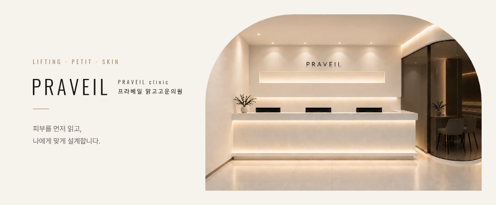
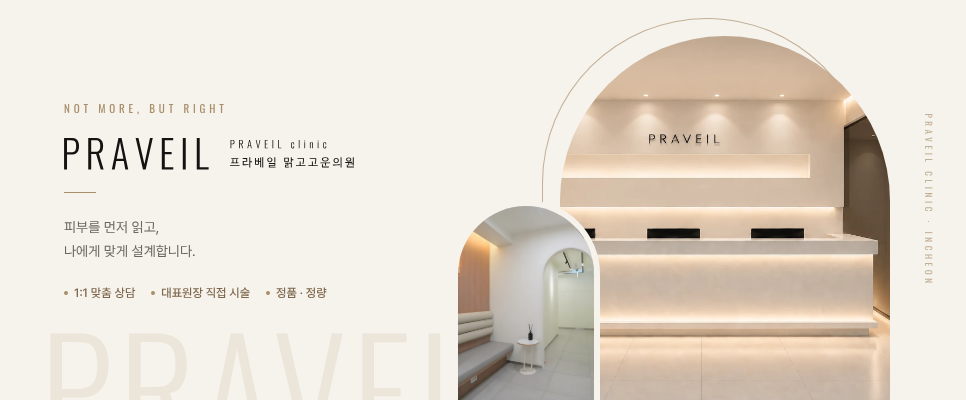
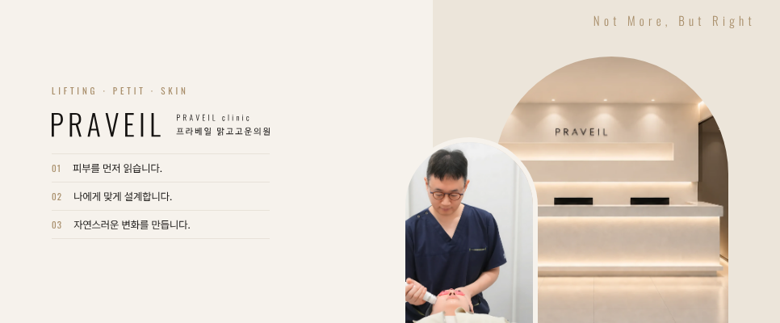
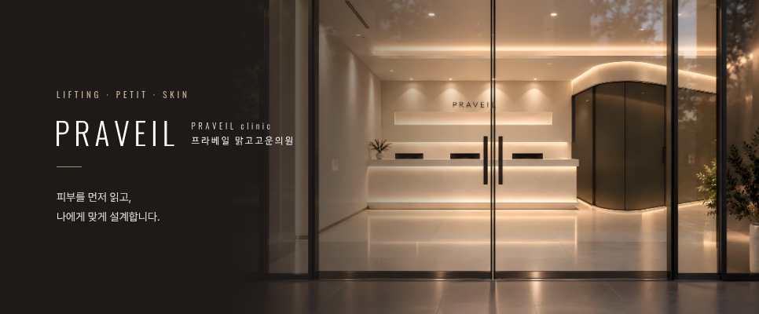
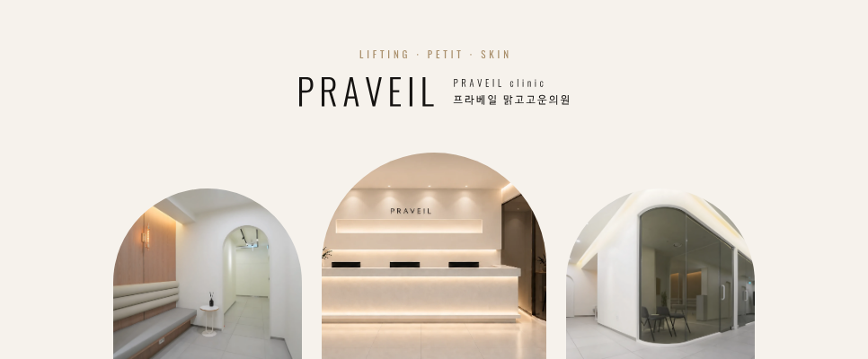
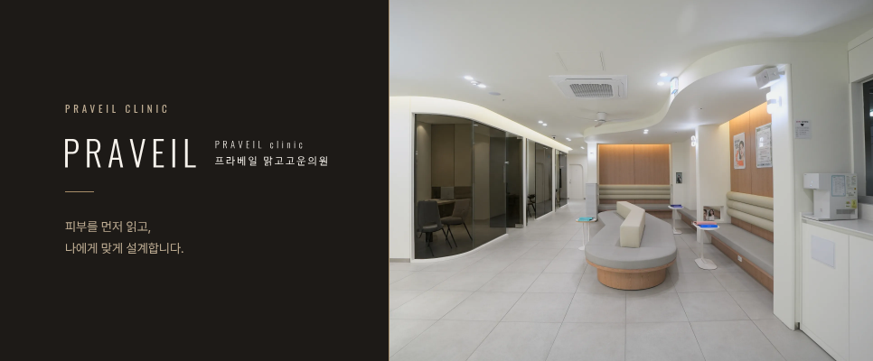

A · 아이보리 + 아치 사진

A-1 · 겹친 아치 + 작은 아치 사진 + 키워드

A-2 · 아래 진료시간 · 전화 띠
A-3 · 철학 3줄 + 두 아치 (로비 · 원장 진료)

B · 로비 입구 사진 전체 + 왼쪽 어둡게

C · 가운데 로고 + 아치 사진 세 장

D · 짙은 바탕 + 오른쪽 사진

 A-3 · 철학 3줄 + 두 아치 (로비 · 원장 진료)
A-3 · 철학 3줄 + 두 아치 (로비 · 원장 진료)